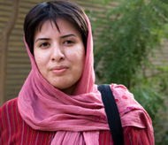

|
|
به پدر سمیه رشیدی اجازه ملاقات ندادند
چهار شنبه2 دی 1388
تغییر برای برابری - امروز دوم دی ماه پدر سمیه رشیدی برای پی گیری وضعیت دخترش به بازپرسی امنیت مراجعه  کرد اما درخواست ملاقات با دخترش را رد کردند. یکی از وکلای سمیه و همچنین چندتن از مادران کمپین که در تمامی این مدت او را همراهی می کردند و در جلوی دادگاه منتظرایستاده بودند با اعلام این خبر آفزودند که به پدر سمیه گفتند بعد از تعطیلات مراجعه کند. یکی از وکلای سمیه گفت به پدر سمیه گفته اند هنوز پرونده او در مرحله تحقیقات هست و تا کارشناس پرونده نظرش رانفرستد نمی توانند کاری انجام دهند.
سمیه رشیدی فعال حقوق زنان شنبه 29 آذر ماه ، بعد از حضور در دادگاه انقلاب بازداشت و روانه زندان اوین شد. هفته گذشته با ورود ناگهانی 5 مامور (در ساعت 6 صبح روز 23 آذر ) به منزل سمیه رشیدی که به همراه دو تن از دوستانش در آن زندگی می کند و تفتیش منزل، وسایل شخصی او و دیگر دوستانش ضبط شد. طی مدت بازداشت تا کنون سمیه تنها توانسته برای چند دقیقه به خانواده اش زنگ بزند و چون آنها در منزل نبودند به یکی از دوستانش ازسلامت خود اطلاع داده است.
رشیدی از فعالان کمپین یک میلیون امضاست وی همچنین در سال تحصیلی جاری به دلیل ستاره دار شدن از تحصیل در مقطع کارشناسی ارشد رشته مطالعات زنان محروم شد. و تلاش او با وجود پی گیری وضعیتش برای ورود به دانشگاه بی ثمر ماند و از حق انسانی تحصیل محروم شد.